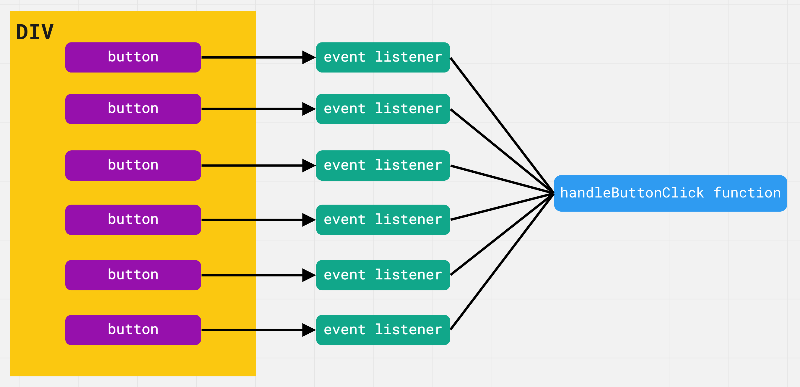
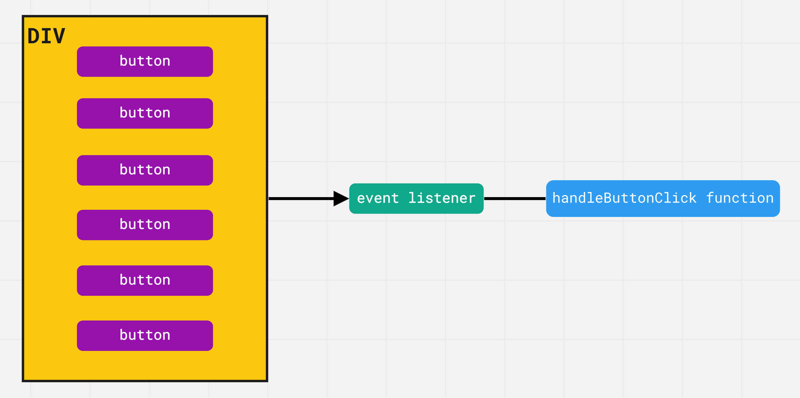

<<назад
Делегирование событий
Всплытие позволяет реализовать один из самых полезных приёмов - делегирование событий (event delegation). Он заключается в том, что если есть группа элементов, события которых нужно обрабатывать одинаково, то добавляется один обработчик на их общего предка, вместо того чтобы добавлять обработчик каждому элементу. Используя свойство event.target можно получить ссылку на целевой элемент, понять на каком именно потомке произошло событие и обработать его.
Рассмотрим делегирование на примере. Создаем элемент div, добавляем в него произвольное количество кнопок, например 100, и регистриуем каждой из них слушателя события клика с функцией handleButtonClick .

Проблема в том, что у нас есть сто слушателей событий. Все они указывают на одну и ту же функцию слушателя, но самих слушателей 100. Что если мы переместим всех слушателей на общего предка, элемент div?

Теперь есть только один обработчик события клика и браузеру не нужно хранить в памяти сто различных слушателей. То есть делегирование сводится к трём простым шагам.
- Определить общего предка группы элементов для отслеживания событий
- Зарегистрировать на элементе-предке обработчик события которое мы хотим отлавливать от группы элементов.
- В обработчике использовать event.target для выбора целевого элемента.
Такой подход упрощает инициализацию слушателей однотипных элементов. Можно добавлять, удалять или изменять элементы, при этом не нужно вручную добавлять или удалять обработчики событий.
Палитра цветов
Будем делать палитру цветов с возможностью выбрать цвет при клике и отображением выбранного цвета. Вместо того, чтобы назначать обработчик каждому элементу палитры, которых может быть очень много, повесим один слушатель на общего предка div.color-palette. В обработчике события клика используем event.target, чтобы получить элемент на котором произошло событие и связанный с ним цвет, который будем хранить в атрибуте data-color.
Selected color: -
ИНТЕРЕСНО!
Обязательно проверяем цель клика, чтобы это точно была кнопка, мы не хотим обрабатывать клики в элемент-контейнер. Для проверки типа элемента используем свойство nodeName.